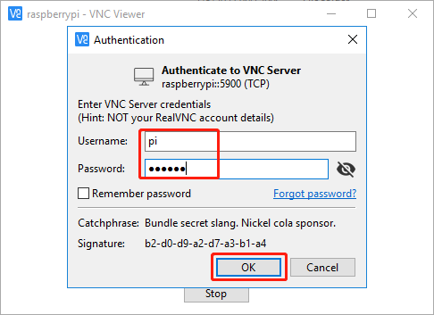

注釈
こんにちは、SunFounderのRaspberry Pi & Arduino & ESP32愛好家コミュニティへようこそ！Facebook上でRaspberry Pi、Arduino、ESP32についてもっと深く掘り下げ、他の愛好家と交流しましょう。
参加する理由は？
エキスパートサポート：コミュニティやチームの助けを借りて、販売後の問題や技術的な課題を解決します。
学び＆共有：ヒントやチュートリアルを交換してスキルを向上させましょう。
独占的なプレビュー：新製品の発表や先行プレビューに早期アクセスしましょう。
特別割引：最新製品の独占割引をお楽しみください。
祭りのプロモーションとギフト：ギフトや祝日のプロモーションに参加しましょう。
👉 私たちと一緒に探索し、創造する準備はできていますか？[ここ]をクリックして今すぐ参加しましょう！
Windowsユーザー
Windowsユーザーであれば、Windows PowerShellを使ってRaspberry Piにリモートでログインできます。
キーボードで
windows+Rショートカットキーを押して Run プログラムを開きます。次に入力ボックスに powershell と入力します。ping <hostname>.localと入力することで、Raspberry Piが同じネットワークにいるか確認します。ping raspberrypi.localもしターミナルに
Ping request could not find host <hostname>.localと表示されたら、Raspberry Piがネットワークに接続できていない可能性があります。どうしても
<hostname>.localにpingが打てない場合は、代わりに IPアドレスの取得方法 とping <IPアドレス>を試してみてください。(例:ping 192.168.6.116)"Reply from <IPアドレス>: bytes=32 time<1ms TTL=64"といったプロンプトが複数表示されれば、コンピュータはRaspberry Piにアクセスできています。
ssh <username>@<hostname>.local（またはssh <username>@<IPアドレス>）と入力します。ssh pi@raspberrypi.local次のようなメッセージが表示される場合があります。
The authenticity of host 'raspberrypi.local (192.168.6.116)' can't be established. ECDSA key fingerprint is SHA256:7ggckKZ2EEgS76a557cddfxFNDOBBuzcJsgaqA/igz4. Are you sure you want to continue connecting (yes/no/[fingerprint])?
"yes"と入力します。
事前に設定したパスワードを入力します。（私の場合は
raspberryです。）注釈
パスワードを入力する際、文字は画面に表示されませんが、これは正常です。正確なパスワードを入力するだけです。
Raspberry Piに接続できたので、次の手順に進むことができます。

{kind=link}
リモートデスクトップ
コマンドウィンドウでRaspberry Piにアクセスするだけでは満足できない場合、リモートデスクトップ機能を使ってGUIで簡単にRaspberry Piのファイルを管理できます。
ここでは VNC® Viewer を使用する。
VNCサービスを有効にする
VNCサービスはシステムにインストール済みですが、デフォルトでは無効です。設定で有効にする必要があります。
以下のコマンドを入力します：
sudo raspi-configキーボードの下矢印キーを押して 3 Interfacing Options を選び、 Enter キーを押します。

次に VNC。
キーボードの矢印キーを使って <Yes> -> <OK> -> <Finish> を選び、設定を完了します。
VNCへのログイン
個人のコンピューターに VNC Viewer をダウンロードしてインストールします。
インストールが完了したら、開きます。次に、ホスト名またはIPアドレスを入力してEnterキーを押します。

Raspberry Piの名前とパスワードを入力したら、 OK をクリックします。
これでRaspberry Piのデスクトップが表示されます。